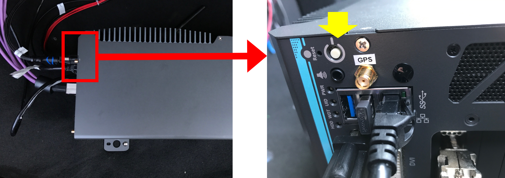
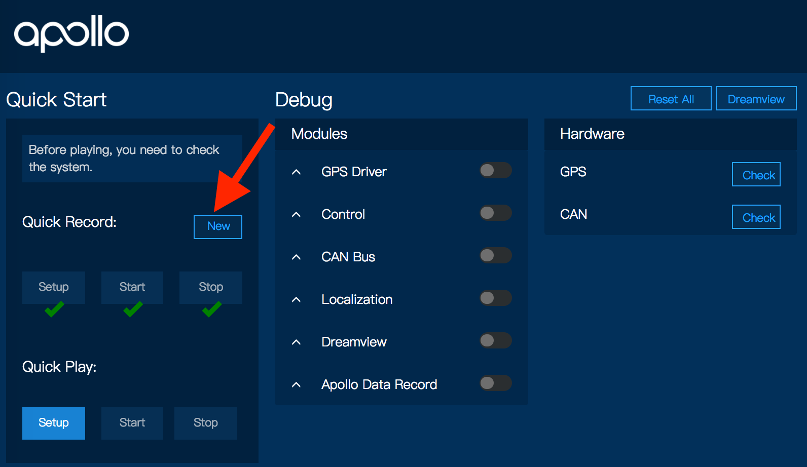
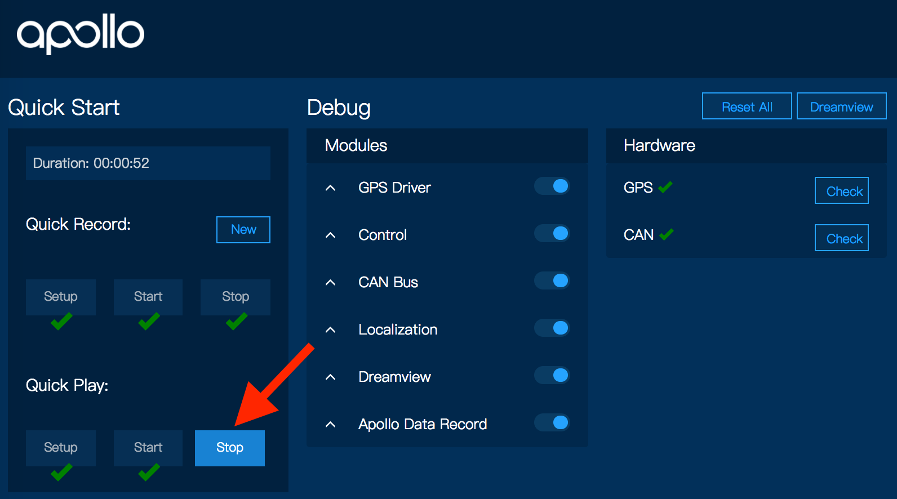

Apollo 快速入门指南 1.0
目录
关于这个文档
Apollo 快速入门指南 1.0 提供了所有关于了解、安装以及构建Apollo的基本说明
文档规约
下表列出了本文档中使用的归约：
| Icon | 描述 |
|---|---|
| 粗体 | 重要 |
等宽字体 |
代码，类型数据 |
| 斜体 | 文件标题，章节和标题使用的术语 |
| Info 包含可能有用的信息。忽略信息图标没有消极的后果 | |
| Tip. 包括有用的提示或可能有助于您完成任务的捷径。 | |
| Online. 提供指向特定网站的链接，您可以在其中获取更多信息 | |
| Warning. 包含不能忽略的信息，或者执行某个任务或步骤时，您将面临失败风险 |
概览
Apollo 1.0, 也被称为 Automatic GPS Waypoint Following(自动GPS跟随), 使用在封闭的区域内，如测试轨道或停车场。它可以准确地以人类驾驶员在封闭的平坦区域的速度复现一个驾驶轨迹。
在这个开发阶段, Apollo 1.0 无法 察觉到邻近的障碍物, 不要在公共道路或没有GPS信号的区域行驶。
车辆环境描述
The Lincoln MKZ, enhanced by Autonomous Stuff, 为用户提供了一个无障碍的自动车辆平台。该平台为用户提供了一整套硬件和软件解决方案。
用户可以直接获得车辆某些模块控制权限，如档位，速度和指示灯。平台已经为转向，刹车，加速和档位创建了接口，为开发人员提供了可使用的用户界面。
包含的其他功能:
- 电源分配器终端
- 集成PC与ROS预安装和配置
- 线控驱动的紧急停止系统
- 以太网和USB连接 (to PC)
硬件安装
请参考 Apollo 1.0 Hardware and System Installation Guide 中的步骤来安装硬件组件以及系统软件
软件安装
请参考Apollo软件安装指南
在车辆上运行示例
本节提供运行Apollo 1.0 Demo on Vehicle的说明。 1. 设置硬件：
- 打开平台车辆
- 打开工业PC机（IPC）. 
- 通过按住电源按钮打开调制解调器电源，直到指示灯亮起
- 设置IPC的网络配置：静态IP（例如192.168.10.6），子网掩码（例如255.255.255.0）和网关（例如192.168.10.1）
- 配置您的DNS服务器IP（例如，8.8.8.8）。
- 使用平板电脑访问设置并连接到MKZ wifi 热点：

- 在Docker中使用Chrome（只能使用Chrome） 启动HMI：
 Warning: 确保您不是同时从两个Docker容器启动HMI。
Warning: 确保您不是同时从两个Docker容器启动HMI。
启动本地版本Docker映像
运行以下命令：
cd $APOLLO_HOME
bash docker/scripts/release_start.sh local_release
当Docker启动时，它创建一个端口映射，将Docker内部端口8887映射到主机端口8887.然后，您可以在主机浏览器中访问HMI Web服务：
打开Chrome浏览器并启动阿波罗人机界面，转到 192.168.10.6:8887.

记录驾驶轨迹
按照以下步骤记录驾驶轨迹：
- 在Apollo HMI中，在Quick Record下，单击Setup以启动所有模块并执行硬件运行状况检查。

- 如果硬件健康检查通过，单击 Start 按钮开始记录驱动程序轨迹。

- 到达目的地后，点击Stop 按钮停止录制。

- 如果要记录不同的轨迹，请单击New 按钮再次开始录制。 
执行自动驾驶
按照以下步骤执行自主驾驶：
-
在Apollo HMI中，在Quick Play下，单击 Setup 启动所有模块并执行硬件运行状况检查。

-
如果车辆顺利通过Setup这一步, 它已经准备好进入自动模式了。 确保驾驶员准备好了！ 点击 Start按钮开始自动驾驶。

- 到达目的地后，点击 Stop 按钮停止重放录制的轨迹。 
关闭
-
从终端关闭系统：
sudo shutdown now -
关闭IPC（找到桌面右上角的图标点击 Shut Down).
-
按住电源按钮关闭调制解调器，直到指示灯熄灭。
-
关掉车子